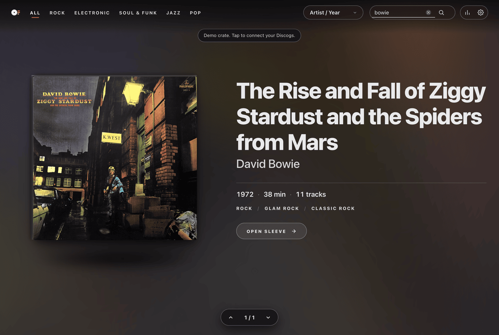
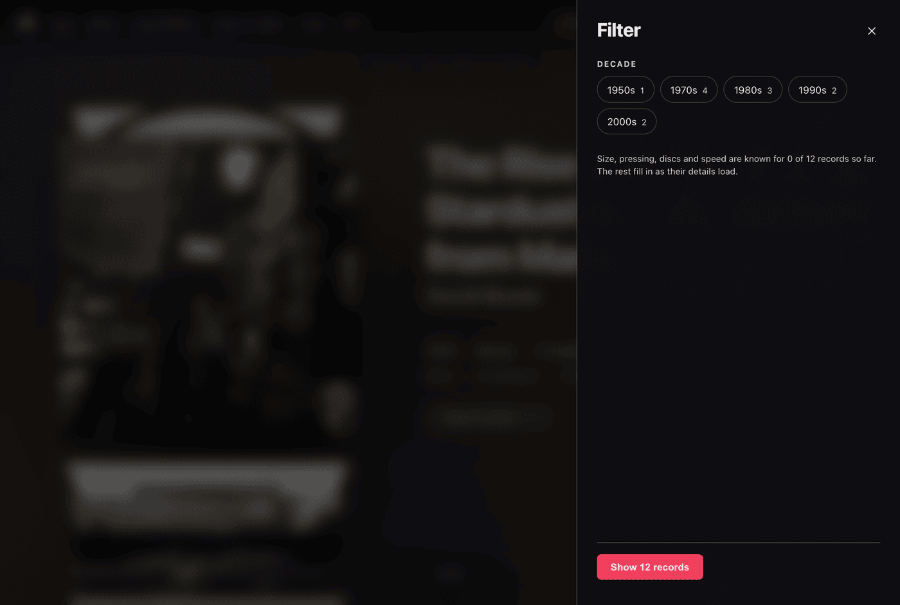

Searching & Filtering
Search and filter your crate by genre, artist, decade, speed, and format.
Use text search to query album titles and tracklists, or use Surprise Me to jump to a random record.
Genre Divider Tabs
Genre buttons in the navigation bar are generated from the styles and genres in your collection:
- Click any genre pill (such as Rock, Electronic, Jazz, Funk / Soul, Hip Hop) to isolate only those records.
- Because records frequently span multiple styles, an album tagged with both Funk and Soul will appear in both sections.
- Select All to return to your complete collection.
Instant Search
Pressing / on your keyboard immediately opens the search bar without shifting other header elements.
Search evaluates queries across:
- Album titles
- Artist and band names
- Individual song titles across all tracklists
Results update as you type, and pressing Esc clears the search and restores the full crate.

Sorting Your Collection
Use the sort selector in the navigation bar to reorder the crate:
- Artist / Year (Default): Groups albums by artist alphabetically, sorted chronologically by release year within each artist.
- Artist (A to Z): Pure alphabetical order by artist name.
- Release Year: Chronological timeline from oldest recordings to newest.
- Recently Added: Shows your newest acquisitions first, matching your recent Discogs activity.
- Genre: Groups albums by primary musical genre.
Advanced Filters Drawer
Clicking the filter icon opens a dedicated drawer to drill down by physical release specifications:
- Decades: Narrow by era (1960s, 1970s, 1980s, 1990s, 2000s, 2010s, 2020s).
- Vinyl Size: Filter by 12" LPs, 7" singles, or 10" EPs.
- Pressing Type: Distinguish original pressings from reissues, remasters, club editions, or promo copies.
- Disc Count: Filter single LPs versus double LPs, triple gatefolds, or box sets.
- Playback Speed: Separate 33 RPM albums from 45 RPM audiophile pressings.

Surprise Me (Shuffle)
Click the shuffle icon in the header to jump to a random record in your crate.